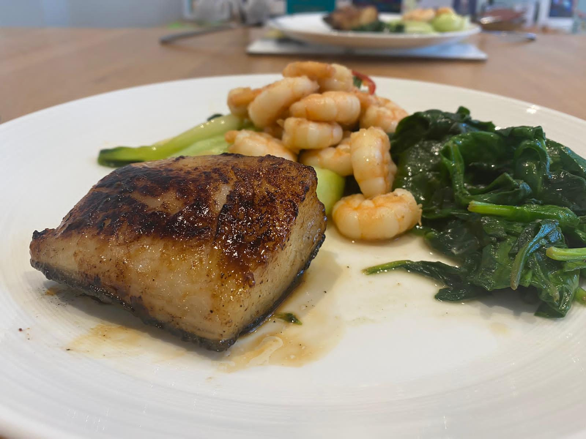

Black cod marinated in miso sauce with fried prawns, pak choy and spinach

Miso Black Cod with Fried Spinach and Prawns
This is a beautiful dish that eleavtes a tasty piece of fish to the next level. Using a classic recipe and marination this dish is a classic.
Take some time to properly prepare and marinate the fish and you will be rewarded with fantastic flavours and a full stomach! Serves 2 people.
Ingredients
1/4 cup sake
1/4 cup mirin
1/4 cup white miso paste
3 tablespoons granulated sugar
4 (8-ounce) black cod fillets
300g fresh prawns
2 cloves of garlic
500g Pak Choy
500g washed spinach
1 tablespoon olive oil
1 teaspoon dried chilli flakes
Cooking Steps
Two to 3 days beforehand, make the miso marinade and marinate the fish. Bring the sake and mirin to a boil in a medium saucepan over high heat. Boil for 20 seconds to evaporate the alcohol. Turn the heat down to low, add the miso paste, and whisk. When the miso has dissolved completely, turn the heat up to high again and add the sugar, whisking constantly to ensure that the sugar doesn't burn on the bottom of the pan. Remove from heat once the sugar is fully dissolved. Cool to room temperature.
Pat the black cod fillets thoroughly dry with paper towels. Slather the fish with the miso marinade and place in a non-reactive dish or bowl and cover tightly with plastic wrap. Leave to marinate in the refrigerator for 2 to 3 days.
To cook the fish: Preheat oven to 400°F. Heat an oven-proof skillet over high heat on the stovetop. Lightly wipe off any excess miso clinging to the fillets, but don't rinse it off. Film the pan with a little oil, then place the fish skin-side-up on the pan and cook until the bottom of the fish browns and blackens in spots, about 3 minutes. Flip and continue cooking until the other side is browned, 2 to 3 minutes. Transfer to the oven and bake for 5 to 10 minutes, until fish is opaque and flakes easily.
To accompany this we also prepared spinach, Pak Choy and prawns. Crush garlic and add with half a Birdseye chilli to some sesame oil, add a splash of soy sauce to taste. Remove from pan. Put to one side.
Cool the pak choy and spinach in the same manner as the prawns in the same pan (separately) and add half a tablespoon of honey with the soy sauce.